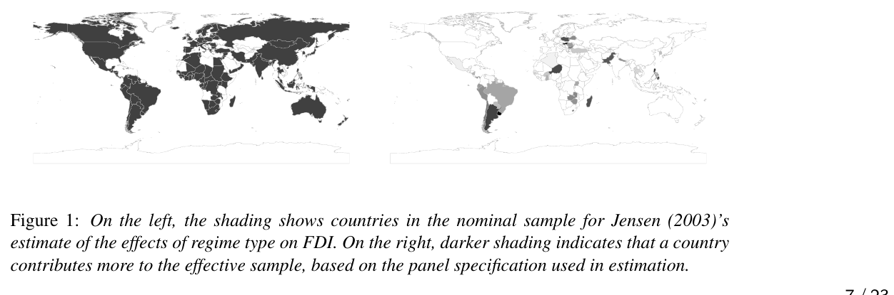

2001-09-16
Same identification strategy as Lecture 3. New question:
What can flexible estimation repair — and what can’t it?
Today:
Assume conditional ignorability:
\[ (Y(1),Y(0)) \perp D \mid X, \]
with overlap:
\[ 0 < P(D=1 \mid X) < 1. \]
This assumption does all the causal work.
Today is about estimating a quantity that is already identified. No estimator creates identification that wasn’t there.
Natural instinct: match on more covariates.
Matching degrades with more covariates (Samii et al. 2016) — bias, SE, and RMSE all worsen, even from irrelevant noise covariates.
Satisfying ignorability and satisfying a matching estimator are not the same operation.
\[ Y = \alpha + \theta_R D + X'\beta + \varepsilon \]
Even with \(X\) sufficient for ignorability, Aronow and Samii (2016):
\[ \hat\theta_R \xrightarrow{p} \frac{E[w_i\theta_i]}{E[w_i]}, \qquad w_i = \big(D_i - E[D_i\mid X_i]\big)^2 \]
(\(\xrightarrow{p}\): “converges to, as the sample grows” — formally, convergence in probability. You’ll see this arrow throughout today.)
where \(\theta_i = Y_i(1)-Y_i(0)\) and \(E[w_i\mid X_i] = \text{Var}[D_i\mid X_i]\).
OLS weights by how much \(D\) varies given \(X\) — units near the assignment margin dominate.
Jensen (2003): effect of regime type on FDI, cross-national panel.
Aronow and Samii (2016): nominal sample vs. effective (variance-weighted) sample.

Aronow and Samii (2016), Figure 1: nominal sample (left) vs. effective sample (right) for Jensen (2003)
An invisible artifact of running regression with covariates — nobody chose this weighting.
\(X\) sufficient for ignorability. Regression correctly specified. \(\hat\theta_R\) still wrong under heterogeneity.
A failure of the estimator, not of identification.
Today: what makes an estimator target \(E[Y(1)]-E[Y(0)]\) directly?
\[ E[Y(1)] = E_X\big[E[Y \mid D=1, X]\big], \qquad E[Y(0)] = E_X\big[E[Y \mid D=0, X]\big]. \]
(Law of iterated expectations: average the within-\(X\) mean over the distribution of \(X\). This is the step that turns “regress within each \(X\)” into a population-wide number.)
Same estimand either way.
Let \(\mu_1(X) = E[Y \mid D=1, X]\) and \(\mu_0(X) = E[Y \mid D=0, X]\).
\[ \hat\tau_{OR} = \frac{1}{n}\sum_{i=1}^n \big(\hat\mu_1(X_i) - \hat\mu_0(X_i)\big) \]
Needs: \(\hat\mu_1, \hat\mu_0\) correct, or converging fast enough (next).
Fails: misspecification where treated or control units are sparse.
Let \(\pi(X) = P(D=1 \mid X)\).
\[ \hat\tau_{IPW} = \frac{1}{n}\sum_{i=1}^n \left(\frac{D_i Y_i}{\hat\pi(X_i)} - \frac{(1-D_i) Y_i}{1-\hat\pi(X_i)}\right) \]
Needs: \(\hat\pi(X)\) correct, bounded away from 0 and 1.
Fails: near-0/1 \(\hat\pi(X_i)\) ⇒ exploding weights.
\[ \hat\tau_{AIPW} = \frac{1}{n}\sum_{i=1}^n \Bigg[ \hat\mu_1(X_i) - \hat\mu_0(X_i) + \frac{D_i\big(Y_i - \hat\mu_1(X_i)\big)}{\hat\pi(X_i)} - \frac{(1-D_i)\big(Y_i - \hat\mu_0(X_i)\big)}{1-\hat\pi(X_i)} \Bigg] \]
OR plus a bias-correction term.
\[ \underbrace{\hat\mu_1(X_i) - \hat\mu_0(X_i)}_{\text{outcome regression}} \;+\; \underbrace{\frac{D_i(Y_i - \hat\mu_1(X_i))}{\hat\pi(X_i)} - \frac{(1-D_i)(Y_i - \hat\mu_0(X_i))}{1-\hat\pi(X_i)}}_{\text{bias correction}} \]
Condition on \(X\) and define \(E[D|X] = P(D=1|X) = \pi(X)\) and \(E[Y|D=1,X] = \mu_1(X)\)
\[ E\left[D\left(Y-\hat\mu_1(X)\right)\mid X\right]. \]
\[ \begin{aligned} E\left[D\left(Y-\hat\mu_1(X)\right)\mid X\right] &= E[DY\mid X] - E[D\hat\mu_1(X)\mid X] \\ &= \pi(X)\mu_1(X) - \pi(X)\hat\mu_1(X) \\ &= \pi(X)\left(\mu_1(X)-\hat\mu_1(X)\right). \end{aligned} \]
Expected treated residual = model error × probability of treatment.
\[ E\left[ \frac{D(Y-\hat\mu_1(X))}{\pi(X)} \mid X \right]. \]
\[ \begin{aligned} E\left[ \frac{D(Y-\hat\mu_1(X))}{\pi(X)} \mid X \right] &= \frac{1}{\pi(X)} E[D(Y-\hat\mu_1(X))\mid X] \\ &= \frac{1}{\pi(X)} \pi(X)(\mu_1(X)-\hat\mu_1(X)) \\ &= \mu_1(X)-\hat\mu_1(X). \end{aligned} \]
Removes the \(\pi(X)\) scaling.
\[ \begin{aligned} E\left[ \frac{D(Y-\hat\mu_1(X))}{\pi(X)} \right] &= E_X\left[ E\left[ \frac{D(Y-\hat\mu_1(X))}{\pi(X)} \mid X \right] \right] \\ &= E_X[\mu_1(X)-\hat\mu_1(X)]. \end{aligned} \]
Equivalently,
\[ E\left[ \frac{D(Y-\hat\mu_1(X))}{\pi(X)} \right] = E_X[\mu_1(X)]-E_X[\hat\mu_1(X)]. \]
\[ \begin{aligned} E_X[\hat\mu_1(X)] &+ E\left[ \frac{D(Y-\hat\mu_1(X))}{\pi(X)} \right] \\ &= E_X[\hat\mu_1(X)] + E_X[\mu_1(X)-\hat\mu_1(X)] \\ &= E_X[\mu_1(X)]. \end{aligned} \]
\(\hat\mu_1(X)\) cancels.
\[ \mu_1(X)=E[Y\mid D=1,X]. \]
Consistency:
\[ Y=Y(1) \qquad \text{when } D=1, ~~\text{so}~~~\mu_1(X) = E[Y(1)\mid D=1,X]. \]
Under conditional ignorability,
\[ Y(1)\perp D\mid X, \]
which implies
\[ E[Y(1)\mid D=1,X] = E[Y(1)\mid X]. \]
Therefore,
\[ \mu_1(X)=E[Y(1)\mid X]. \]
\[ \begin{aligned} E_X[\mu_1(X)] &= E_X\left[E[Y(1)\mid X]\right] \\ &= E[Y(1)]. \end{aligned} \]
\[ \boxed{ \begin{aligned} E_X[\hat\mu_1(X)] &+ E\left[ \frac{D(Y-\hat\mu_1(X))}{\pi(X)} \right] \\ &= E_X[\mu_1(X)] \\ &= E_X\left[E[Y(1)\mid X]\right] \\ &= E[Y(1)]. \end{aligned} } \]
AIPW is consistent if either \(\hat\mu_d(X)\) or \(\hat\pi(X)\) is correctly specified — not necessarily both.
\[ \boxed{ \text{Correct } \mu(X) \ \text{ OR } \ \text{Correct } \pi(X) \ \Longrightarrow\ \hat\tau_{AIPW} \xrightarrow{p} \tau } \]
Two independent chances to get it right.
Estimation statement, conditional on ignorability — not a second identification strategy.
Recall: \(\hat\theta_R \xrightarrow{p} E[w_i\theta_i]/E[w_i]\), \(w_i=\text{Var}[D_i\mid X_i]\).
\(\hat\tau_{AIPW}\) avoids this — averages \(\hat\mu_1(X)-\hat\mu_0(X)\) over \(X\) directly: \(E_X[\mu_1(X)] = E[Y(1)]\), no implicit reweighting.
A second reason AIPW earns its complexity, beyond double robustness: it targets the ATE by construction.
Lecture 2: adjustment sets are often large.
Parametric \(\hat\mu(X)\), \(\hat\pi(X)\) misspecified exactly where ignorability is most defensible.
Natural fix: flexible ML.
New problem — statistical, not causal.
Plug ML \(\hat\mu(X)\), \(\hat\pi(X)\) into \(\hat\tau_{OR}\), \(\hat\tau_{IPW}\), or AIPW; fit and evaluate on the same data.
Fit \(\hat\mu(X)\) on the full sample; evaluate \(Y_i - \hat\mu(X_i)\) on the same units.
Residuals shrink toward zero — the model memorized \(Y_i\).
Bias that does not vanish as \(n \to \infty\).
Regularization bias — the other failure mode from the previous slide — gets its own worked concrete treatment later (“Why the naive score fails” and after), once Neyman orthogonality gives us the tools to see exactly where it comes from.
\(O(\text{something})\) = “doesn’t grow bigger than a constant times that something.”
You already know one example: the standard error of a sample mean is \(O(1/\sqrt{n})\) — it shrinks proportional to \(1/\sqrt{n}\). Quadruple your sample, and your SE roughly halves.
\(O_p(\cdot)\): same idea, but for a random quantity that depends on your particular sample (like \(\hat\mu(X)-\mu(X)\)) — “doesn’t grow bigger than a constant times that something, with high probability” across repeated samples.
Parametric: \(\hat\mu(X) - \mu(X) = O_p(n^{-1/2})\).
ML: \(\hat\mu(X) - \mu(X) = O_p(n^{-1/4})\) (or slower).
\[ O_p(n^{-1/4}) \times O_p(n^{-1/4}) = O_p(n^{-1/2}) \]
only if the score is orthogonal.
\(\mu(X)\) is a function — “close” isn’t one number.
\[ \underbrace{Y - \hat\mu(X)}_{\text{residual}} = \underbrace{Y - \mu(X)}_{\text{irreducible noise } \varepsilon} + \underbrace{\mu(X) - \hat\mu(X)}_{\text{estimation error}} \]
Small residuals ≠ \(\hat\mu\) close to \(\mu\).
\[ \|\hat\mu - \mu\|^2 = E_X\big[(\hat\mu(X) - \mu(X))^2\big] \]
Average squared gap, over the distribution of \(X\).
“Converges fast enough” = does \(\|\hat\mu - \mu\|^2\) shrink, and how fast?
Parametric: few coefficients — every observation sharpens all of them. Error shrinks proportional to \(1/\sqrt{n}\).
ML: also guards against overfitting. Error shrinks much more slowly, often close to \(1/n^{1/4}\).
| Sample size | Error, parametric (\(\propto n^{-1/2}\)) | Error, ML (\(\propto n^{-1/4}\)) |
|---|---|---|
| 100 | 0.10 | 0.32 |
| 1,600 (16×) | 0.025 | 0.16 |
| 25,600 (256×) | 0.006 | 0.08 |
An estimator of \(\tau\) that:
Two ingredients:
Bundle the nuisance functions into one object: \(\eta = (\mu_1,\mu_0,\pi)\).
\(\psi(W; \theta, \eta)\) is Neyman orthogonal if perturbing \(\eta\) slightly away from the truth \(\eta_0\) doesn’t move \(E[\psi]\) — to first order:
\[ \left.\frac{\partial}{\partial \eta}\, E\big[\psi(W;\theta,\eta)\big]\right|_{\eta=\eta_0} = 0. \]
(\(\eta\) is function-valued, so this “derivative” means: pick a direction to nudge \(\mu_1,\mu_0,\pi\), and check how much \(E[\psi]\) responds.)
AIPW was already built doubly robust — this is the local (derivative) version of that same protection.
Define \(M(\eta) \equiv E[\psi(W;\theta_0,\eta)]\) — the score, averaged, holding \(\theta\) at its true value. Then \(M(\eta_0)=0\): the moment condition holds at the truth.
Taylor’s theorem, exactly:
\[ M(\hat\eta) = \underbrace{M(\eta_0)}_{=0} + \underbrace{\partial_\eta M(\eta_0)}_{=0 \text{ by orthogonality}}(\hat\eta-\eta_0) + O\big((\hat\eta-\eta_0)^2\big) \]
\[ \Rightarrow\; M(\hat\eta) = O\big((\hat\eta-\eta_0)^2\big) \]
Quadratic in the mistake, not linear. This is where \(O_p(n^{-1/4})\times O_p(n^{-1/4})=O_p(n^{-1/2})\) comes from, a few slides ahead.
\(\eta\) is function-valued, so “\(\partial_\eta M(\eta_0)\)” isn’t ordinary calculus. Reduce it to one dimension: for \(r\in[0,1]\),
\[ \eta_r = \eta_0 + r(\hat\eta-\eta_0), \qquad f(r) \equiv M(\eta_r) \]
\(f(0)=M(\eta_0)=0\), \(f(1)=M(\hat\eta)\) — ordinary one-variable calculus in \(r\) gets the same expansion, rigorously.
Neyman orthogonality means \(f'(0)=0\) for every possible direction \(\hat\eta-\eta_0\) — not just the one you happen to get.
Same question, for a score that is not orthogonal — the plain outcome-regression score, using the same \(\mu_1,\mu_0\) from “Outcome regression” several slides back. (Note: \(\pi(X)\) never enters this score at all.)
\[ \psi(W;\theta,\mu) = \mu_1(X)-\mu_0(X)-\theta \]
\(M(\mu)\equiv E[\psi(W;\theta_0,\mu)]\), so \(M(\mu_0)=0\). Since \(\psi\) is linear in \(\mu\), the expansion is exact — no remainder term at all:
\[ M(\hat\mu) = \underbrace{M(\mu_0)}_{=0} + \partial_\mu M(\mu_0)[\hat\mu-\mu_0] = E\big[(\hat\mu_1-\mu_1)(X)\big] - E\big[(\hat\mu_0-\mu_0)(X)\big] \]
\(\partial_\theta\psi=-1\) for every unit, so \(\partial_\theta M = -1\) and \(\hat\theta-\theta_0 = -M(\hat\mu)\):
\[ \hat\theta - \theta_0 \;=\; E\big[(\hat\mu_1-\mu_1)(X)\big] - E\big[(\hat\mu_0-\mu_0)(X)\big] \]
No approximation here, and no protection either. Bias in \(\hat\mu_1,\hat\mu_0\) passes straight through, undiminished.
The naive score failed this test. Does AIPW pass it? Only two pieces of \(\psi\) involve \(\mu_1\) — the \(\mu_1(X)\) term and the \(-\mu_1(X)\) inside the correction term. Perturb \(\mu_1\) by \(\tilde\mu_1\) and add up their responses:
\[ \partial_{\mu_1} E[\psi]\,[\tilde\mu_1] = E\left[\tilde\mu_1(X)\left(1-\frac{D}{\pi(X)}\right)\right] \]
Condition on \(X\) (same iterated-expectations move as “Two ways to use the same identification result”), so \(D\) collapses to \(E[D\mid X]\):
\[ = E\left[\tilde\mu_1(X)\left(1-\frac{E[D\mid X]}{\pi(X)}\right)\right] \]
If \(\pi(X)\) correct, \(E[D\mid X]=\pi(X)\), so this is \(1-1=0\) — for every \(\tilde\mu_1\).
Neyman orthogonality, verified: wiggling \(\hat\mu_1\) doesn’t move \(E[\psi]\), to first order.
A genuinely different computation — \(\pi\) sits in two denominators, so this needs the quotient rule, not simple substitution:
\[ \partial_{\pi} E[\psi]\,[\tilde\pi] = -E\left[\tilde\pi(X)\left(\frac{D(Y-\mu_1(X))}{\pi(X)^2} + \frac{(1-D)(Y-\mu_0(X))}{(1-\pi(X))^2}\right)\right] \]
If \(\mu_1,\mu_0\) correct, \(E[D(Y-\mu_1(X))\mid X]=0\) and \(E[(1-D)(Y-\mu_0(X))\mid X]=0\) — both pieces vanish, for every \(\tilde\pi\).
Same conclusion, different mechanism. This is what “double robustness, derived” means: two separate zero-derivative results, one per nuisance — not one calculation copied over.
\[ O_p(n^{-1/4}) \times O_p(n^{-1/4}) = O_p(n^{-1/2}). \]
Two slow nuisance estimators combine into one fast causal estimator — if the score is orthogonal.
\(O_p(n^{-1/2})\) is the rate that makes ordinary confidence intervals and \(t\)-tests valid — the same rate a correctly-specified parametric regression gets “for free.” Hit it, and your DML estimate behaves like textbook regression, even though \(\hat\mu,\hat\pi\) came from a random forest.
Non-orthogonal score: stuck at \(O_p(n^{-1/4})\) — standard errors computed the usual way are simply wrong: tight-looking and overconfident, not just “a bit off.”
Handles the rate problem in population.
Not overfitting: same-data \(\hat\eta\) breaks the second-order bound.
Need: independence between fitting data and evaluation data.
That is cross-fitting.
Every unit is evaluated with nuisances it didn’t help fit.
A structural requirement for valid inference with ML nuisance estimators — not a robustness check.
Without it: overfit residuals ⇒ biased score ⇒ invalid SEs.
With it: \(\hat\tau\) is \(\sqrt{n}\)-consistent, asymptotically normal, valid CIs.
\(\hat\pi_{-k}, \hat\mu_{1,-k}, \hat\mu_{0,-k}\): nuisance fits trained on every fold except \(k\).
\[ \hat\psi_i = \hat\mu_{1,-k}(X_i)-\hat\mu_{0,-k}(X_i) + \frac{D_i\big(Y_i-\hat\mu_{1,-k}(X_i)\big)}{\hat\pi_{-k}(X_i)} - \frac{(1-D_i)\big(Y_i-\hat\mu_{0,-k}(X_i)\big)}{1-\hat\pi_{-k}(X_i)} \]
\[ \hat\theta_{DML} = \frac{1}{N}\sum_{i=1}^N \hat\psi_i. \]
\[ \widehat{\mathrm{Var}}(\hat\theta_{DML}) = \frac{1}{N^2}\sum_{i=1}^N \big(\hat\psi_i - \hat\theta_{DML}\big)^2 \]
Write \(\phi_0(W_i) \equiv \psi(W_i;\theta_0,\eta_0)\) — the score, evaluated at the truth (same \(\psi\) as always, just a shorter name for it here). (\(\|\cdot\|_2\) below is the same function-gap idea as “Measuring the function gap” — literally its square root, \(\|\hat\mu-\mu_0\|_2 = \sqrt{\|\hat\mu-\mu_0\|^2}\) — just written as the norm itself rather than its square.)
\[ \hat\theta_{DML} - \theta_0 = \frac{1}{N}\sum_{i=1}^N \phi_0(W_i) + R_N, \qquad R_N = O_p\big(\|\hat\mu-\mu_0\|_2\,\|\hat\pi-\pi_0\|_2\big) \]
Sufficient rate condition:
\[ \|\hat\mu-\mu_0\|_2\,\|\hat\pi-\pi_0\|_2 = o_p(N^{-1/2}) \]
Rule of thumb: both nuisances \(o_p(N^{-1/4})\) ⇒ asymptotic normality.
Caution: weak overlap ⇒ \(R_N\) need not be small, even with cross-fitting.
\[ \boxed{ \text{DML} = \text{Orthogonal (AIPW-type) score} + \text{Flexible ML nuisance estimators} + \text{Cross-fitting} } \]
Random forests, lasso, boosting, neural nets for \(\hat\mu(X)\) and \(\hat\pi(X)\) without sacrificing \(\sqrt{n}\)-consistency.
Estimation technology — not “is \(X\) right?”
Semiparametric efficiency bound: smallest variance any well-behaved estimator of the ATE can achieve (given only ignorability and overlap — no extra assumptions). Attained by the efficient influence function (EIF).
AIPW score = the EIF for the ATE under unconfoundedness.
You cannot asymptotically beat AIPW/DML’s variance without strengthening the assumptions.
DML assumes conditional ignorability and overlap. It does not test, weaken, or substitute for them.
\[ \boxed{ \text{Flexible nuisance estimation} \not\Rightarrow \text{Conditional ignorability} } \]
Assume a constant treatment effect:
\[ Y = \theta_0 D + g_0(X) + \varepsilon \]
Frisch–Waugh–Lovell / partialling out:
The underlying score, \(\psi(W;\theta,\eta) = \big[(Y-\eta_Y(X))-\theta(D-\eta_D(X))\big](D-\eta_D(X))\), is Neyman orthogonal (Ahrens et al. 2026) — same recipe, linear-in-\(D\) model.
Orthogonality and cross-fitting fix estimation. They don’t fix the estimand problem from a constant-effect specification.
Default to AIPW unless you can defend homogeneous effects.
Three hypothetical DML analyses of the same comparison:
Rich \(X\), defended; cross-fitting used; tight CI similar to parametric AIPW.
Rich \(X\), kitchen sink, no defense; cross-fitting used; tight CI very different from simpler estimates.
Rich \(X\), defended; no cross-fitting; extremely tight CI.
For each: what’s demonstrated? What’s uncertain? Identification, design, or estimation?
The endpoint is deciding why, not just computing.
Selection-on-observables, end to end: identification, conditioning, construction, estimation.
Next: when observables aren’t enough.
What identifying variation can we exploit when conditional ignorability isn’t credible?
Coined “double/debiased machine learning”: orthogonal scores + cross-fitting — exactly today’s recipe.
Formalizes two failure modes:
DML1 solves per fold, averages \(\hat\theta_k\). DML2 pools the score, solves once — generally more stable.
Takeaway: the same recipe applies far beyond selection-on-observables.
401(k) eligibility on net financial assets (SIPP data; Chernozhukov and Hansen 2004):
Agreement across learners is a diagnostic. Large disagreement is a warning sign.
Same motivation: unconfoundedness more plausible with rich \(X\), but rich \(X\) breaks standard estimation.
Question: in a high-dimensional linear outcome model, do we need \(\hat\pi(X)\) at all?
Answer: no. Sparse linear \(\mu_d(X)\) ⇒ \(\sqrt{n}\)-consistent inference from overlap alone.
Corrects regularization shrinkage bias without estimating \(\pi(X)\).
Cost: commits to linearity/sparsity in \(\mu(X)\).
The AIPW formula, derived — not asserted.
\[ \psi(\hat P) - \psi(P) = -\underbrace{\int \phi(z;\hat P)\,dP(z)}_{\text{first-order bias}} + R_2(\hat P, P). \]
Naive plug-in inherits that bias directly. Fix — subtract it — gives the one-step estimator:
\[ \hat\psi = \psi(\hat P) + P_n\{\phi(Z;\hat P)\}. \]
For the ATE: exactly our AIPW score.
\[ \hat\psi - \psi = \underbrace{(P_n - P)\{\hat\phi - \phi\}}_{T_1 \text{: empirical process term}} + \underbrace{R_2(\hat P, P)}_{T_2 \text{: remainder/regularization-bias term}}. \]
Generalizes beyond ATEs — LATEs, stochastic interventions, missing data.
Dube et al. (2020), MTurk monopsony: text-based task features as high-dimensional \(X\).
\[ m_{naive}(W;\theta,\eta) = (Y - g(X) - \theta D)D, \qquad m_{PLM}(W;\theta,\eta) = \big[(Y-\ell(X)) - \theta(D-r(X))\big](D - r(X)). \]
Both identify \(\theta_0\). Only \(m_{PLM}\) is Neyman orthogonal.
Common ML defaults don’t automatically satisfy DML’s convergence-rate requirements.
Random forests, deep trees: can fail to converge fast enough. “We used a random forest” ≠ a valid DML analysis.
DML solves a statistical problem: using flexible estimators without breaking \(\sqrt{n}\)-inference.
Not a solution to the identification problem from Lectures 1–2.
\[ \boxed{ \text{Cross-fitted, orthogonal, ML-based estimation} \not\Rightarrow \text{conditional ignorability holds} } \]